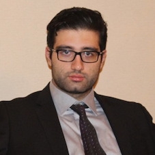
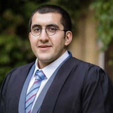

Clinical Research Teams
NIC Research Teams
TMSCA is entering a partnership with the Neuro International Collaboration (NIC) to host a new clinical research opportunity for undergrads interested in medical research. Participants will have the opportunity to join teams of 3-8 students mentored by an experienced medical researcher, and contribute work towards one of our available projects from the fields of Neuroscience, Neurobiology, Psychiatry, and Neurosurgery.
Spring 2022 Cohort Application has closed
Research Mentors
Saman Arfaie - [MD & Master of Surgery (Candidate), HBSc, HBA] LinkedIn
is a second-year Doctor of Medicine and Master of Surgery Candidate at McGill University. He completed his B.Sc. in Neurobiology, B.A. in Persian Literature, and double minors in Chemistry and Music at UC Berkeley before conducting brain tumor research at UCSF. At McGill, Saman is currently studying surgical coordination and mastery at the Neurosurgical Simulation & Artificial Intelligence Learning Center and investigating PET Imaging Biomarkers in Alzheimer's Disease at the Translational Neuroimaging Laboratory of the Douglas Research Center. In total, Saman has co-authored/presented numerous peer-reviewed papers and posters, and has won 20+ national and international awards for his work.
Mohammad Mofatteh - [PhD (Cantab), MPH (Sheff), MSc (Liv), PGCert TLHE (Oxon), HBSc (KCLon)] LinkedIn
is a former Lecturer and Scientist at the University of Oxford, UK, and is currently working towards his Medical degree at Queen’s University Belfast, UK. He finished his Ph.D. at the University of Cambridge where he worked on axonal transportation during embryogenesis. Afterwards, he was offered a Lectureship at the University of Oxford to study cellular oscillation. He has supervised the research and professional development of several undergraduate and postgraduate students in the UK and internationally.
 Mohammad Mashayekhi - [PhD, MSc, BSc, MD (Candidate)] LinkedIn
Mohammad Mashayekhi - [PhD, MSc, BSc, MD (Candidate)] LinkedIn
is a current third-year medical student at the University of British Columbia. He finished his Ph.D. and M.Sc. at the University of British Columbia, focusing on theoretical condensed matter physics.